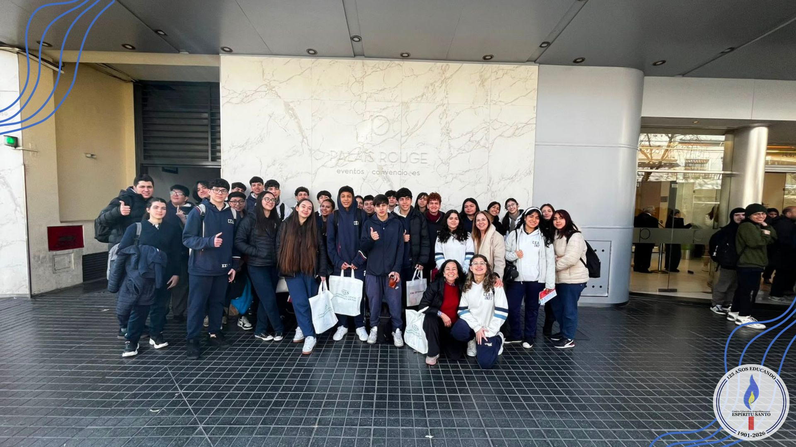
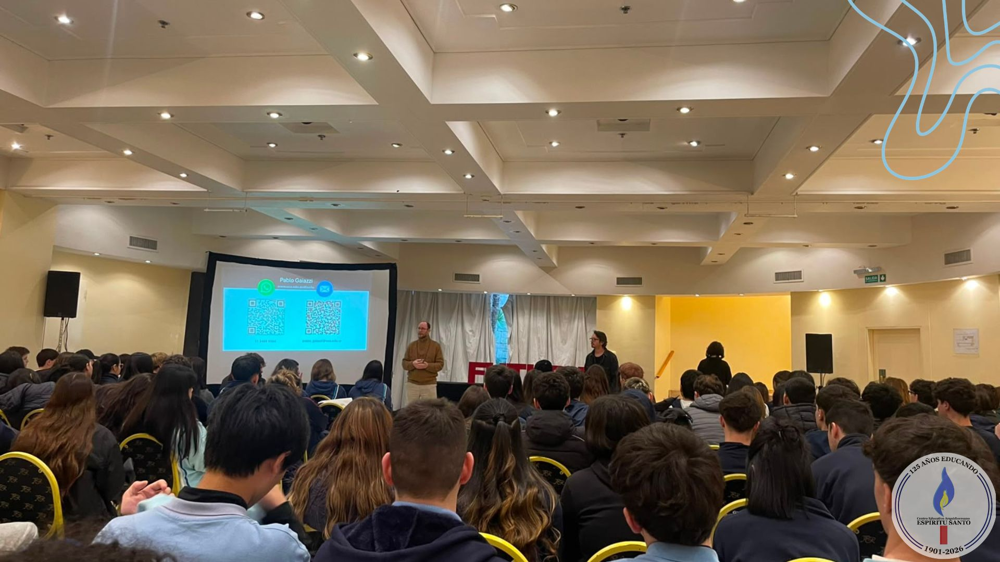

Salida al Palais Rouge
Por: Erika Quiñonez y Guadalupe Famularo

Participaron los alumnos de 5º A y B.
Todos los alumnos de 5to año realizamos una salida educativa al Palais Rouge. En el lugar pudimos recorrer distintos puestos de universidades, donde se nos brindaba información sobre las carreras disponibles, las becas y otros aspectos relacionados con el ingreso y la vida universitaria. También podíamos acercarnos a hacer preguntas y recibir orientación según nuestros intereses.
Durante la jornada también se realizaron distintas charlas a las que podíamos asistir de manera voluntaria, sobre temas relacionados con las carreras. Fue una experiencia interesante y útil, ya que nos permitio conocer diferentes opciones para después de terminar el colegio.

Leer otras notas
Palabras sobre el paso a la inmortalidad del general San Martin
Convivencia de los alumnos (Ludopatia)
Publicidad